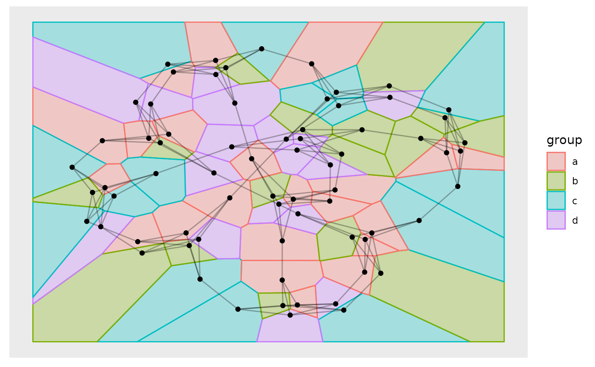
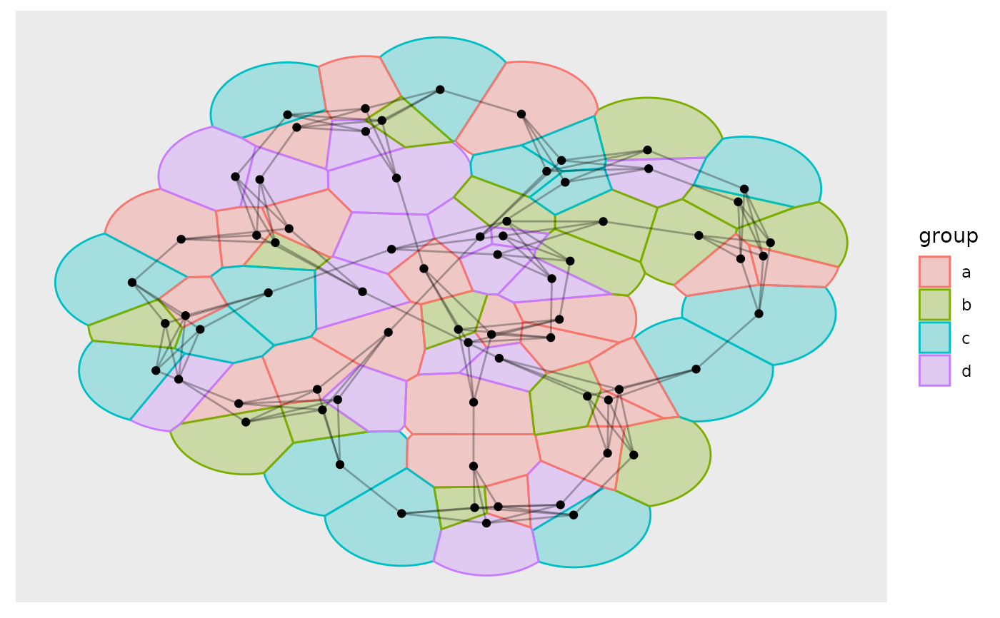

This geom is equivalent in functionality to ggforce::geom_voronoi_tile()
and allows for plotting of nodes as tiles from a voronoi tesselation. As with
ggforce::geom_voronoi_tile() it is possible to restrict the size of the
tile to a fixed radius, as well as round corners and expand/contract the
tile.
geom_node_voronoi(
mapping = NULL,
data = NULL,
position = "identity",
show.legend = NA,
bound = NULL,
eps = 1e-09,
max.radius = NULL,
normalize = FALSE,
asp.ratio = 1,
expand = 0,
radius = 0,
...
)Set of aesthetic mappings created by ggplot2::aes()
or ggplot2::aes_(). By default x and y are mapped to x and y in
the node data and group set to -1.
The data to be displayed in this layer. There are three options:
If NULL, the default, the data is inherited from the plot
data as specified in the call to ggplot().
A data.frame, or other object, will override the plot
data. All objects will be fortified to produce a data frame. See
fortify() for which variables will be created.
A function will be called with a single argument,
the plot data. The return value must be a data.frame, and
will be used as the layer data. A function can be created
from a formula (e.g. ~ head(.x, 10)).
Position adjustment, either as a string naming the adjustment
(e.g. "jitter" to use position_jitter), or the result of a call to a
position adjustment function. Use the latter if you need to change the
settings of the adjustment.
logical. Should this layer be included in the legends?
NA, the default, includes if any aesthetics are mapped.
FALSE never includes, and TRUE always includes.
It can also be a named logical vector to finely select the aesthetics to
display.
The bounding rectangle for the tesselation or a custom polygon
to clip the tesselation to. Defaults to NULL which creates a rectangle
expanded 10\
vector giving the bounds in the following order: xmin, xmax, ymin, ymax. If
supplied as a polygon it should either be a 2-column matrix or a data.frame
containing an x and y column.
A value of epsilon used in testing whether a quantity is zero, mainly in the context of whether points are collinear. If anomalous errors arise, it is possible that these may averted by adjusting the value of eps upward or downward.
The maximum distance a tile can extend from the point of
origin. Will in effect clip each tile to a circle centered at the point with
the given radius. If normalize = TRUE the radius will be given relative to
the normalized values
Should coordinates be normalized prior to calculations. If
x and y are in wildly different ranges it can lead to
tesselation and triangulation that seems off when plotted without
ggplot2::coord_fixed(). Normalization of coordinates solves this.
The coordinates are transformed back after calculations.
If normalize = TRUE the x values will be multiplied by this
amount after normalization.
A numeric or unit vector of length one, specifying the expansion amount. Negative values will result in contraction instead. If the value is given as a numeric it will be understood as a proportion of the plot area width.
As expand but specifying the corner radius.
Other arguments passed on to layer(). These are
often aesthetics, used to set an aesthetic to a fixed value, like
colour = "red" or size = 3. They may also be parameters
to the paired geom/stat.
geom_node_voronoi understand the following aesthetics. Bold aesthetics are
automatically set, but can be overridden.
x
y
alpha
colour
fill
shape
size
stroke
filter
Other geom_node_*:
geom_node_arc_bar(),
geom_node_circle(),
geom_node_point(),
geom_node_range(),
geom_node_text(),
geom_node_tile()
require(tidygraph)
gr <- create_notable('meredith') %>%
mutate(group = sample(letters[1:4], n(), TRUE))
ggraph(gr) +
geom_node_voronoi(aes(fill = group, colour = group), alpha = 0.3) +
geom_edge_link(alpha = 0.3) +
geom_node_point()
#> Using "stress" as default layout

# Use max.radius to make the tesselation more "node"-like
ggraph(gr) +
geom_node_voronoi(aes(fill = group, colour = group), alpha = 0.3, max.radius = 1) +
geom_edge_link(alpha = 0.3) +
geom_node_point()
#> Using "stress" as default layout
